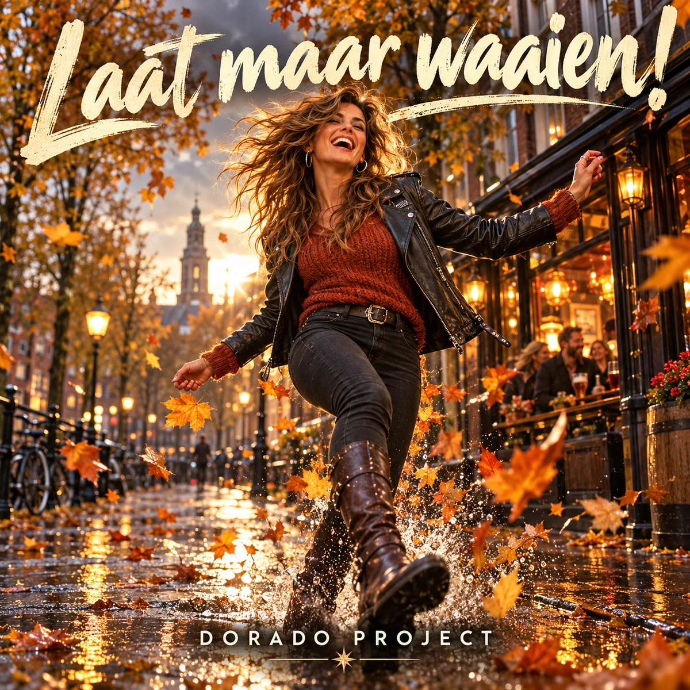

← Alle releases

SINGLE · IN PRODUCTIE
Laat maar waaien!
Nederlandstalige feestrock / Poprock
Laat maar waaien! van Dorado Project: een vrolijk Nederlandstalig herfstnummer, geschreven voor rockende gitaren, een stampende beat en een pittige meidenstem.
De Spotify-link volgt zodra het nummer daar beschikbaar is.
De herfst is van ons
Een paraplu die dubbelklapt, een schoen vol regenwater en bladeren in je haar: in Laat maar waaien! is herfstweer juist de aanleiding voor een feestje. Twee mensen trekken eropuit, stampen door de plassen en eindigen in een warme kroeg. Het nummer is geschreven voor brutale, licht rauwe vrouwenzang, stevige gitaren, handclaps en een refrein om samen mee te brullen. De fotorealistische hoes vangt dat gevoel met een lachende vrouw, gouden bladeren en opspattend water. Het nummer is in productie; de Spotify-link volgt zodra de release beschikbaar is.
Meer van Dorado Project
Van synthpop tot rock: ontdek de andere nummers en het verhaal achter Dorado Project.
Bekijk alle nummers →